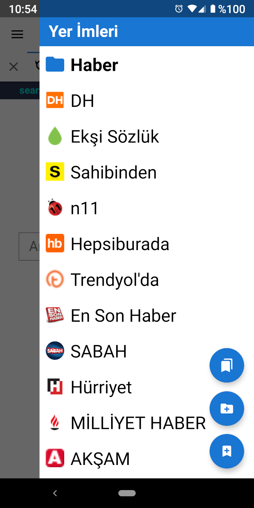

Yer İmleri Yer İmleri
Yer İmleri Yer İmleriYer imlerine ekranın sağından kaydırılarak açılan menünün düzen sekmesinden erişilebilir.
Üst aksiyon butonuna dokunarak, yer imlerini taşıma ve silme gibi gelişmiş seçeneklere sahip yer imleri etkinliğini açabilirsiniz. Yer imleri etkinliğinde, yer imleri veri tabanı görünümünü (database view) yükleme seçeneği vardır. Bu seçenek, yer imlerini SQLite veri tabanındaki halleriyle gösterir; bu durum, yer imlerinin, içe ve dışa aktarma sorunlarının giderilmesinde faydalı olabilir.